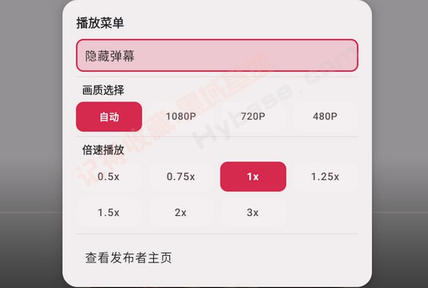
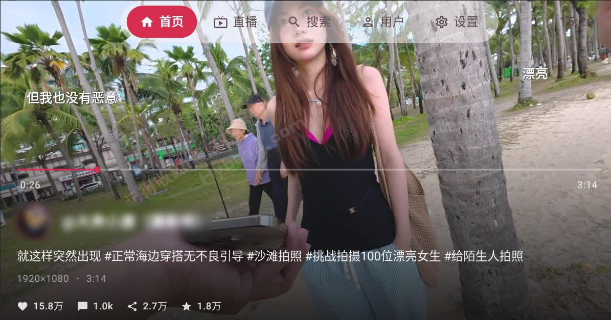

MyDV 横向盘点：电视盒子上的抖音多面手
把抖音搬进电视盒子不是新鲜事，但 MyDV 在画质控制、直播专区、倍速播放等细节上的打磨，让它从一堆类壳里脱颖而出。这篇完整盘点它能做什么、还有哪些明显短板，以及什么人值得折腾一下。
家里客厅摆着一台电视盒子，想刷抖音又懒得拿手机凑到 6 英寸屏幕前——这个场景催生了一大批"抖音 TV 版"类壳应用。MyDV 不是最早出来的那一批，但在遥控器操作体验和功能覆盖面上，它确实把同类的常见痛点逐个啃过了一遍。我连续用了几个月，从装包到直播到调画质，发现它的能力面比表面看的要完整得多。这篇按能力域把它铺开说一遍，客观讲亮点也讲短板，最后给个谁值得上手的画像。
安装与兼容：从拦截解除到各品牌适配
从下载到装包到解除拦截，这是所有第三方 APK 必须过的第一关，也是用户抱怨最多的环节。小米电视的纯净模式、当贝盒子的安全检测、天猫魔盒的未知来源限制——每家品牌都在自己的安卓 TV 系统上套了一层白名单过滤，默认只允许从自家应用商店装包。
MyDV官网 不在任何官方商店上架，所以它必须直面这套机制。好在MyDV文档把各品牌的关闭路径都摸得很细：小米是"设置 → 账号与安全 → 关闭纯净模式"，当贝多了一步开发者模式，外贸盒子（X96、T95 这类原生安卓 TV）最省心直接装就行。极少数顽固案例还有三个绕过手段：手机远程推送 APK、改文件名、重启电视。Android 6.0 以下的老盒子会直接报解析包错误，这个是系统层面的硬门槛，装不了就是装不了。
画质与播放控制：四档分辨率 + 编码偏好 + 倍速七档
这一块是 MyDV 打磨最深的地方。核心入口统一在长按菜单键弹出的功能面板里，画质、倍速、弹幕三个选项挤在一个面板上，遥控器方向键切换，OK 确认，会话内调好就记住，下次打开还是上次的档位——这个细节比同类应用每次都要进设置方便太多。
四档分辨率
自动档跟随源视频，1080P 需要约 5~8Mbps 带宽且 1GHz 以上主频的盒子才能硬解，720P 是主流盒子的平衡点（2~4Mbps），480P 是画面糊但至少能看的极限模式。v2.0 之后新增了视频编码偏好，可以选 H.264（兼容性最好、老盒子无压力）或 H.265（同画质体积小、省带宽、2019 年后的盒子基本都支持）。不确定自己盒子能力的话保持默认或选 H.264 就行。
倍速七档
从 0.5x 到 3.0x 全覆盖，慢速回看搞笑梗、1.5x 听口播教程、2.0x 快速刷过长视频、3.0x 标题党秒过——场景分得很清楚。倍速不影响画质和分辨率，只改变播放速度。如果调完觉得听不清楚，长按菜单切回 1.0x 就好。
弹幕开关
短视频弹幕默认开，直播弹幕默认更密集，觉得画面吵随时可以在同一个长按菜单里关掉。整个面板所有档位在一个会话里都会记住，下次打开不用重调。

直播专区：关注主播 + 热门直播大屏看
按一下返回键呼出左侧导航栏，里面有个直播入口，OK 键进去就是直播专区。两个板块：关注的主播和热门直播——前者需要 Cookie 登录才能同步你抖音账号的关注列表里正在开播的人，后者是官方推荐的当前热门直播，无需登录就能看。
直播和短视频在几个点上不一样：视频看完自动连播下一条，直播是固定画面不会自己跳；直播的弹幕密度比短视频高得多；直播的画质切换同样在长按菜单里，四档一致。已知的限制也很明确：不能发弹幕也不能评论（抖音没开放写接口），高清直播流加载慢、对网络要求更高。

搜索与收藏：虚拟键盘 + 稍后看 + 关注同步
搜索功能对遥控器操作做了适配——虚拟键盘方向键移动焦点逐字输入，热门搜索榜直接点选，两个方式都能用。收藏和稍后看也保留了下来，登录 Cookie 后可以同步抖音账号的关注列表和收藏夹，在盒子上继续看手机上没收尾的视频。首页推荐流按时间线排列，不是算法强推，这个设计对电视场景更友好——你想看的东西不会被算法替你换掉。
短板也要说：三个明显的局限
盘点了一圈亮点，短板也不能藏着。
第一个是直播不能交互。受限于抖音没有开放写接口，MyDV 目前只能看直播，不能发弹幕、不能评论、不能点赞——本质上是个只读的直播入口。如果你习惯了手机上一边看一边刷弹幕的互动感，在电视上会觉得少点什么。
第二个是Cookie 登录有门槛。关注列表同步、收藏夹同步都需要拿到抖音的 Cookie，这个过程对普通用户来说有点复杂——需要用浏览器开发者工具抓包、或者专门的工具辅助。文档里虽然有详细步骤，但不是每个人都愿意折腾。
第三个是老盒子性能瓶颈。1080P 硬解对主频 1GHz 以下的老盒子确实顶不住，H.265 编码更是只在 2019 年后的盒子上稳。如果你家里还有一台三四年前的老盒子，可能只能在 720P 甚至 480P 下凑合用。
什么样的人该用它
梳理完能力面和局限，其实答案已经出来了。三类人最值得：
第一类是家里有新盒子、追求大屏体验的日常刷抖音用户。2019 年后的主流盒子（当贝 B3、小米盒子 4、外贸盒子 X96 Mini 这类）硬解能力够，H.265 编码也支持，1080P 画质在客厅大屏上看着比手机舒服得多——晚饭之后瘫在沙发上刷半小时，比拿手机凑屏幕健康得多。
第二类是想让老人孩子也能方便用抖音的家庭。遥控器操作比手机简单，长按菜单的统一面板不用教，老人看新闻、小孩看动画，按方向键加 OK 就行，不会误触退出也不会乱下载东西。纯净模式关掉之后装一次永久用。
第三类是喜欢折腾电视盒子的轻度数码爱好者。安装拦截解除那一套流程、编码偏好切换、Cookie 登录同步关注列表——这些细节对喜欢折腾的人来说是乐趣，不是负担。而且它的文档做得很细，遇到问题能直接翻到答案，不用到处搜。
收尾
MyDV 不是什么革命性的产品，它就是一个把抖音搬上电视盒子的工具类应用。但它在几个关键维度上——各品牌安装路径的精细化、统一的长按菜单面板、分档清晰的画质与倍速控制——确实比同类壳子走得更远。如果你刚好有一台安卓 TV 盒子，又恰好偶尔想在大屏上刷抖音，它值得拿过来试一下。
这套资料在 GitHub、Gitee、GitCode 三个仓库都能拿到——GitHub 主库更新最快，国内访问慢的时候可以直接去镜像仓库。三个仓库的目录结构和版本同步，文档内容逐字一致，只是存放位置不同。